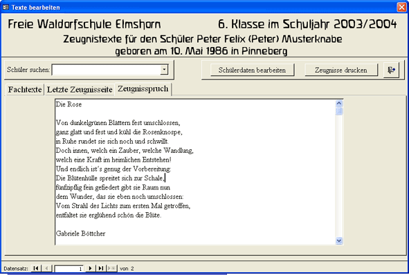

Texel-Hilfe

Einleitung
Beispiele
Überblick
Installation
Organisation
Einstellungen
Schülerdaten
Layout
Dateivorlagen
Schreiben
Einlesen
Korrigieren
Ausdrucken
Lückentexteditor
Kontakt
Eine Zeugnisverwaltung für Waldorfschulen
Vor dem Ausdrucken müssen die eingelesenen Texte noch einmal gelesen werden und die Korrekturen müssen in die Datenbank eingegeben werden.
Ausdrucken der Zeugnisse als Kladde zum Korrekturlesen
Eingabe der Korrekturen
Fehlzeiten - Bemerkungen - Religionstexte
Zeugnissprüche
Ausdrucken der Zeugnisse als Kladde zum Korrekturlesen
Direkt nach dem Einlesen der Zeugnistexte in die Datenbank werden die Zeugnisse in Form einer Kladde, das heißt in schwarzer Schrift, komprimiert auf A4-Papier, ausgedruckt. Eine Klassensatz erreicht triztdem leicht über 100 Seiten.
Diese sollten dann in einer Zeugniskonferenz Korrektur gelesen werden. Gleichzeitig können die Korrekturen schon in der Datenbank eingegeben werden, damit spaätenstens am nächsten Tag mit dem Ausdrucken begonnen werden kann.
Zum Ausdrucken der Zeugniskladden rufen Sie im Druckmenu den Punkt Kopie auf.
Ein Blatt des Kladdeausdrucks:
Eingabe der Korrekturen

Die Korrekturen, die in dem Kladdeausdruck gemacht wurden, sollten in der Zeugniskonferenz gleich in die Datenbank eingegeben werden. Dazu sollten für die verschiedenen Klassen mehrere Rechner zur Verfügung stehen.
Das Formular Daten bearbeiten besitzt drei Datenblätter:
Auf dem Blatt Fachtexte können alle Fachtexte, auch die Klassenlehrertexte bearbeitet werden.
Auf dem Blatt Letzte Zeugnisseite werden die Fehlzeiten, die Religionstexte und Bemerkungen eingegeben.
Auf dem Blatt Zeugnissprüche, das nur in den Klassen 1 bis 7 erscheint, können die Zeugnissprüche bearbeitet werden.
Wählen Sie den gewünschten Schüler und das gewünschte Fach aus und geben Sie die Korrekturen ein.
Der Lehrername und der Fachname kann über die entsprechenden Schaltflächen geändert werden.
Fehlerhafte Textstellen in mehreren Zeugnissen eines Fachs können über die Schaltfläche Ersetzen in allen Fachtexten des ausgewählten Fachs ersetzt werden.
Fehlt einem Schüler ein Fachtext, kann der Text über die Schaltfläche Neues Fach hinzugefügt werden. Dieses Verfahren ist gedacht, wenn einzelnen Schülern ein Text zu einem Fach fehlt, das schon eingelesen wurde. Das Fach muss dazu im Layout eingetragen sein.
Um zu prüfen, ob Schülern Texte zu dem ausgewählten Fach fehlen, benutzen Sie die Schaltfläche Wem fehlt dieser Fachtext?
Fehlzeiten
Der Text, der in dem oberen Textfeld steht, erscheint auf der letzten Zeugnisseite, also der Rückseite des Doppelblattes als Religionstext. Soll ein Schüler keinen Text erhalten, lassen Sie das Feld frei.
Um einen vorprogrammiterten Standardtext eintragen zu lassen, wählen Sie in der Combobox eine der Konfessionen aus. Um einen anderen Text zu speichern, wählen Sie den Eintrag Anderer Text. Die vorprogrammierten Texte lassen sich mit wenigen Basic-Kenntnissen in dem Modul MReligionstext ändern. Zur Erfassung oder Überprüfung der Religionstexte durch die Klassenlehrer bzw. -betreuer können Sie ein Datenblatt mit den schon eingetragenen Religionstexte über die Schaltfläche Datenblatt Religion ausdrucken.
Für einige Schüler mag ein zusätzlicher Text als Bemerkung auf der letzten Zeugnisseite nötig sein. Diesen können sie in dem zweiten Textfeld eintragen.
Zur Angabe der Fehlzeiten sind zwei Möglichkeiten im Modul MFehlzeitentexte einprogrammiert. Dort lassen sich die Texte mit wenigen Basic-Kenntnissen auch ändern. Nach der Eingabe der Zahlen, lassen Sie den Text über die Schaltfläche Text eintragen in das Textfeld schreiben.
Im ersten Modus werden nur die Fehltage erfasst und z. B. als Fehltage: 5 ausgegeben.
Im zweiten Modus, der sich eher für die Oberstufe eignet werden die Tage an denen ein Schüler entschuldigt, die Tage an denen er unentschuldigt und di Verspätungen erfasst und ineinem Satz gefasst ausgedruckt (siehe Abbildung).
Welcher Modus benutzt wird lässt sich im Formular Einstellungen einstellen.
Zur Erfassung Fehlzeiten durch die Klassenlehrer bzw. -betreuer können Sie ein Datenblatt über die Schaltfläche Datenblatt Fehlzeiten ausdrucken.
Der untere Teil einer fertigen Zeugnisrückseite:
Zeugnissprüche

Zeugnissprüche
Die Zeugnissprüche für die Klassen 1 bis 7 werden zwar auch über die Disketten eingelesen, werden aber nicht wie die Fachtexte korrigiert, sondern auf diesem Formular. Die Überschrift Für Peter wird beim Ausdrucken automatisch hinzugefügt. Beim Ausdrucken wählen sie aus, ob der Zeugnisspruch mit dem Klassenlehrertext auf die Innenseite des Doppelbattes oder auf ein Extrablatt gedruckt werden soll.
Ein Extrablatt mit dem Zeugnisspruch: